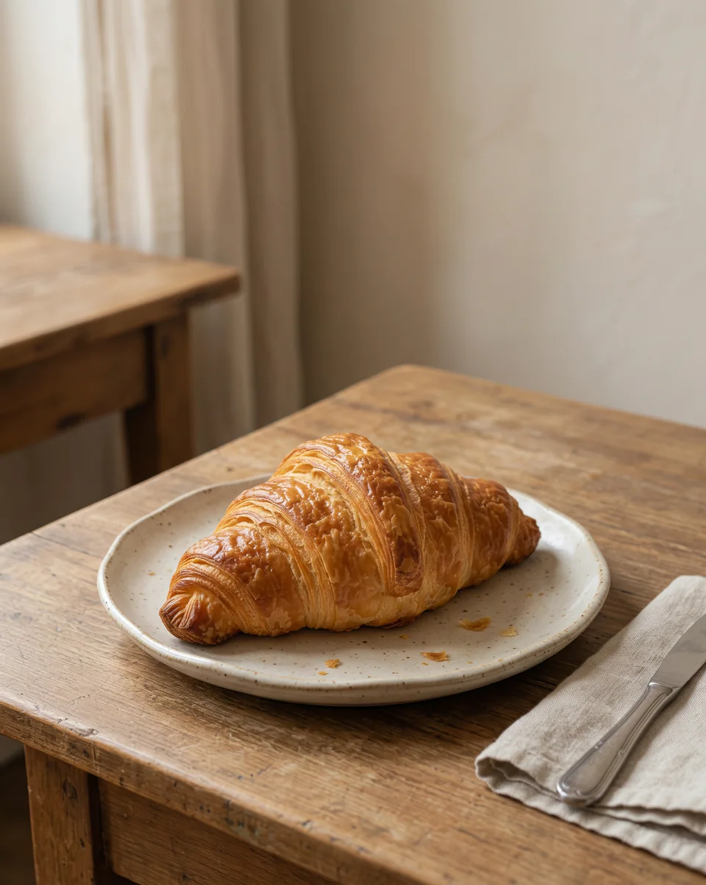
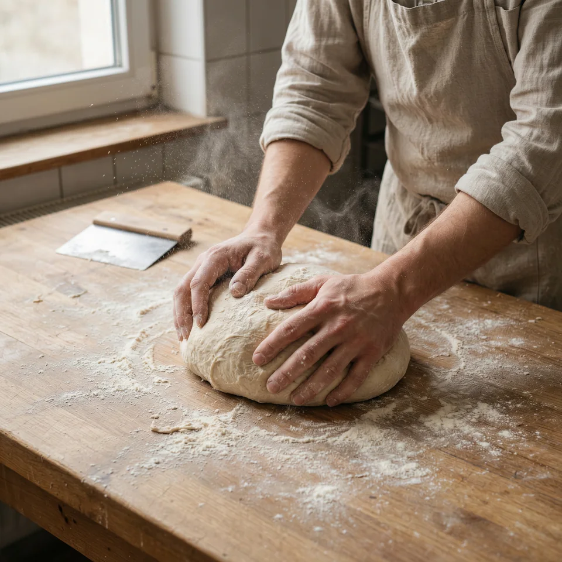
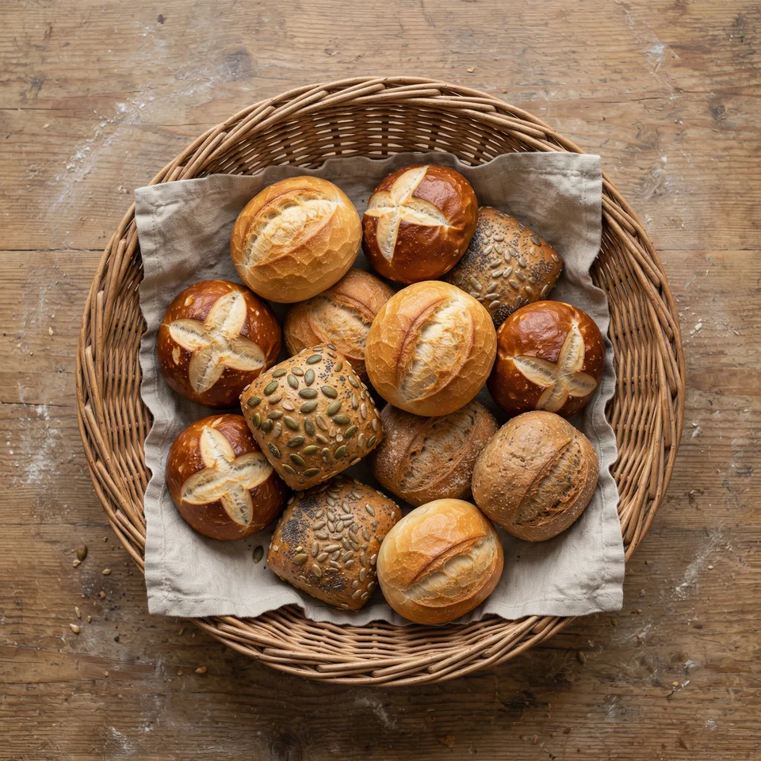
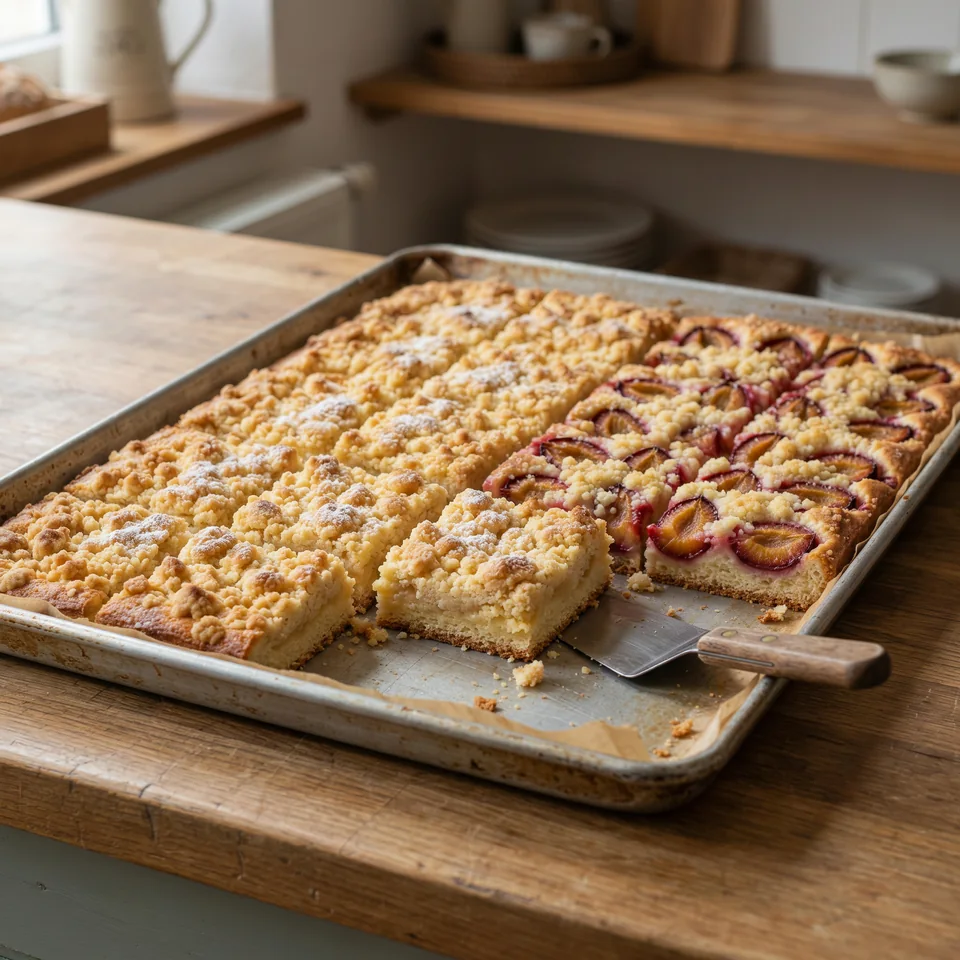
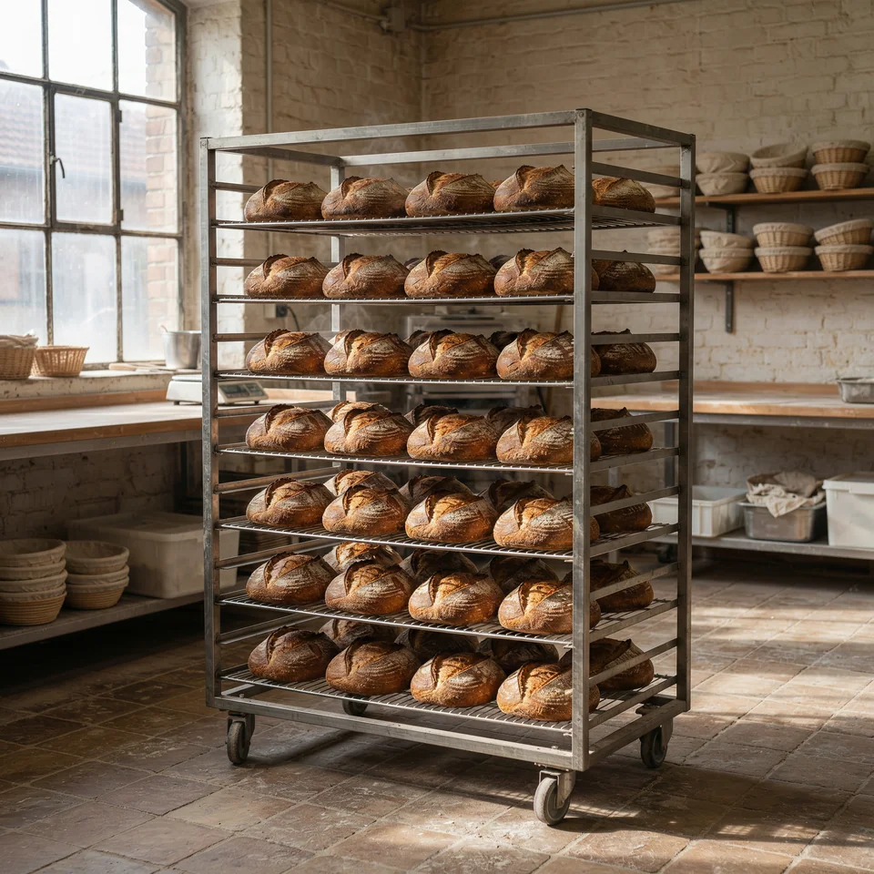
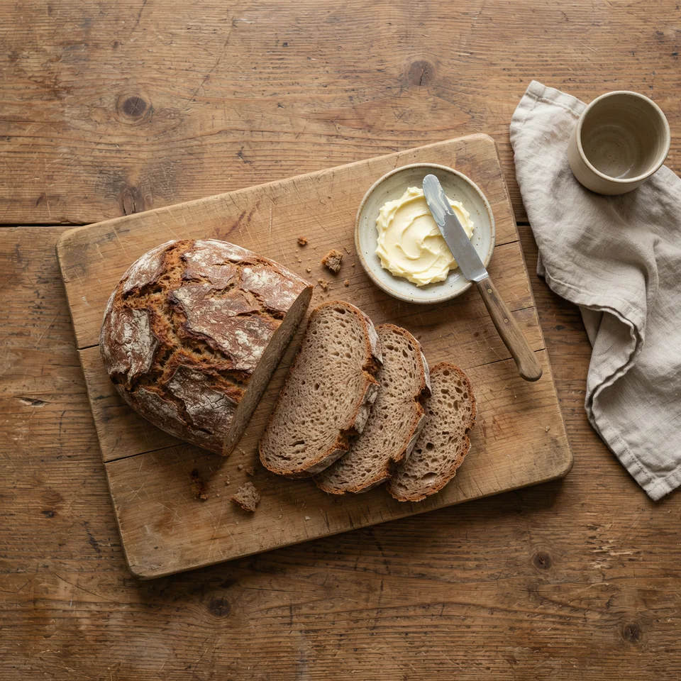

Bäckerei in Musterstadt
Morgens warm, mittags noch knusprig
Brot, Brötchen und Kuchen aus eigener Backstube. Bestellen Sie vor, und Ihre Tüte ist fertig, wenn Sie kommen.

Lange Teigführung
Der Teig ruht über Nacht, das schmeckt man an Kruste und Krume.
Täglich frisch
Gebacken wird morgens, nicht in großen Mengen auf Vorrat.
Vorbestellen
Vorbestellte Brötchen liegen zur Abholung bereit.
Aus der Backstube

Bei uns beginnt der Tag vor dem Sonnenaufgang. Dann werden Teige geformt, die über Nacht gereift sind, und die ersten Brote kommen aus dem Ofen. Wir backen mit Sauerteig, Roggen, Dinkel und Weizen, dazu Brötchen, Laugengebäck und süße Stückchen. Mittags gibt es belegte Brötchen und einen Kaffee, am Wochenende ein kleines Frühstück. Für Feiern backen wir auf Bestellung, gern auch mit Ihrer Wunschsorte.
Unser Sortiment
Das Angebot wechselt mit Saison und Tagesform des Ofens.
Sauerteigbrot
4,80 €
Roggenmisch, Dinkel oder Weizen, 750 g, mit kräftiger Kruste.
Brötchen
0,60 €
Klassisch, Körner oder Laugen, morgens frisch gebacken.
Belegte Brötchen
ab 2,90 €
Mit Käse, Wurst oder vegetarisch, frisch belegt.
Kuchen & Gebäck
ab 2,40 €
Streuselkuchen, Hefeteilchen und Blechkuchen nach Saison.
Frühstücksbox
ab 14 €
Brötchen, Aufstrich und Gebäck für zwei, zum Abholen.
Bestellung für Feiern
auf Anfrage
Brötchenplatten, Brot und Kuchen für Gruppen.
Beispielpreise – werden an Ihr Angebot angepasst.
Vorbestellen in drei Schritten
Bestellen
Sagen Sie uns, was Sie brauchen und wann.
Wir backen
Ihre Bestellung wird frisch gebacken und eingepackt.
Abholen
Tüte nehmen, bezahlen, fertig.
Einblicke




Das sagen Kunden
Beispielbewertungen – frei formuliert für diese Mustervorlage, keine echten Kundenmeinungen.
Die Brötchen sind morgens noch warm und die Kruste knackt richtig. Wir holen sie fast jeden Samstag.
Beispielbewertung Für den Geburtstag haben wir Brötchenplatten bestellt, alles war pünktlich und frisch.
Beispielbewertung Das Sauerteigbrot hält sich bei uns mehrere Tage und schmeckt auch am dritten noch gut.
Beispielbewertung
Häufige Fragen
Kann ich Brot vorbestellen?
Ja, im Laden oder nach Absprache. Bei größeren Mengen bitten wir um einen Tag Vorlauf.
Was steckt in Ihrem Brot?
Die Grundzutaten sind Mehl, Wasser, Salz und Sauerteig oder Hefe, dazu je nach Sorte Körner oder Lauge. Zutatenlisten zeigen wir Ihnen gern.
Backen Sie für Allergiker?
Alle Backwaren entstehen in einer Backstube, in der Gluten, Nüsse und Milch verarbeitet werden. Fragen Sie uns bitte nach Details.
Bieten Sie Lieferung an?
Für größere Bestellungen sprechen wir die Lieferung individuell ab.
Besuchen Sie uns
Kommen Sie morgens zum frischen Brot oder bestellen Sie im Laden vor. Für Feiern und Gruppen planen Sie bitte etwas Vorlauf ein.
- Adresse: Musterstraße 1, 12345 Musterstadt
- Telefon: +49 000 0000000
- E-Mail: info@musterbetrieb.example
Beispieldaten – Adresse, Telefonnummer und E-Mail sind erfunden und nicht erreichbar.
Öffnungszeiten
| Tag | Zeiten |
|---|---|
| Montag | 06:00–18:00 |
| Dienstag | 06:00–18:00 |
| Mittwoch | 06:00–18:00 |
| Donnerstag | 06:00–18:00 |
| Freitag | 06:00–18:00 |
| Samstag | 06:00–13:00 |
| Sonntag | 07:30–11:00 |
Beispiel-Öffnungszeiten